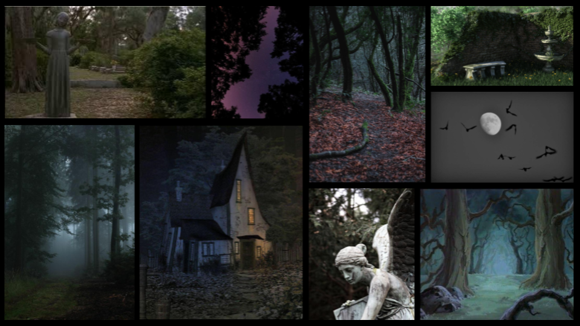
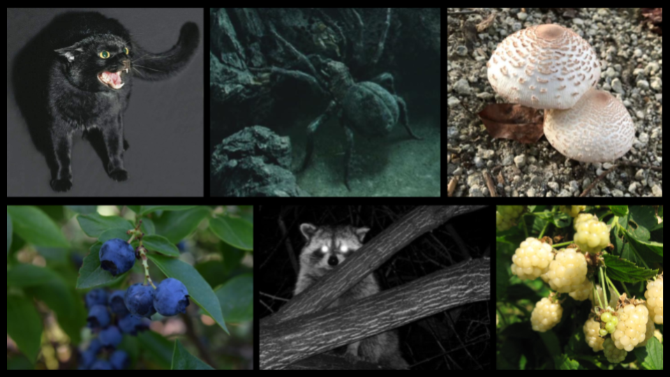
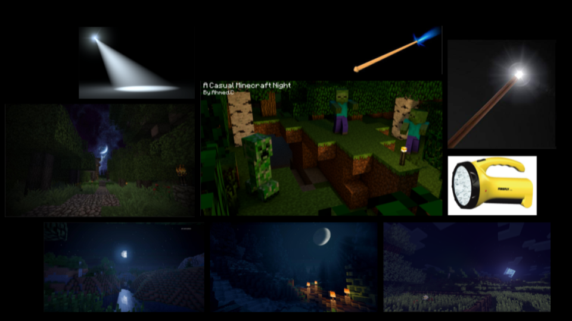
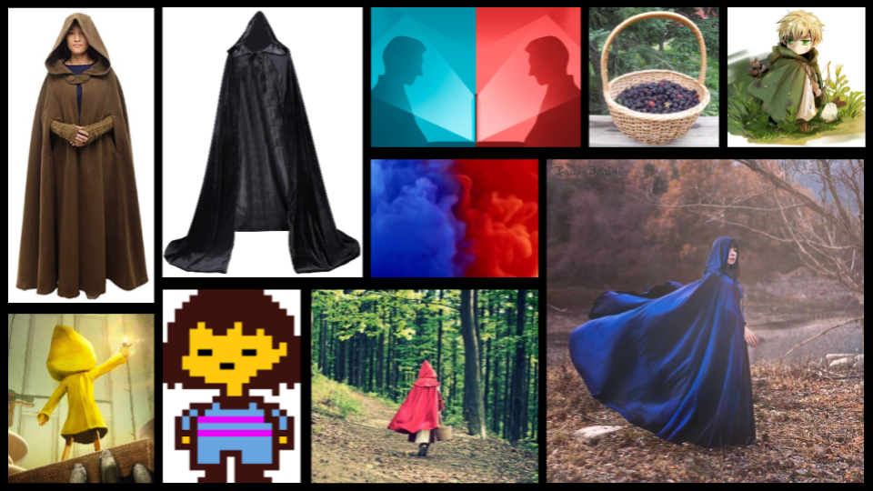
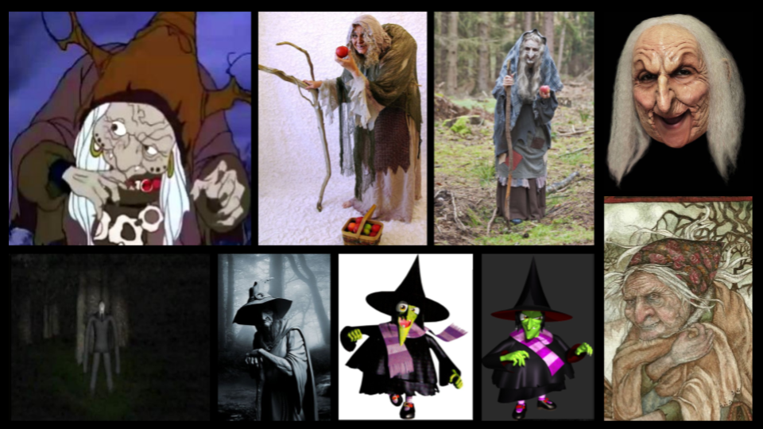

Moodboards Here are the moodboards I created for the development of "Forbidden Fruit", a 3D video game inspired by Rapunzel, A Nightmare Before Christmas, and Slenderman.
Environment - terrain

Environment - Obstacles, secondary enemies, and powerups

The witch's luminous wand

Player 1 & 2

The witch
